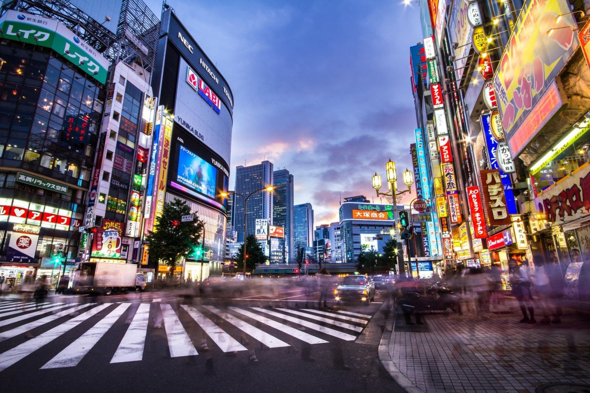
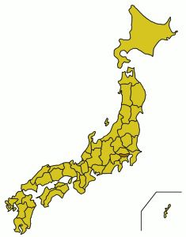
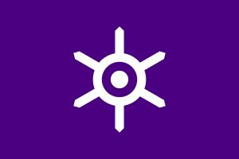

Токио

История города
 Токио первоначально был рыбацкой деревушкой под названием Эдо. В 1508 году город стал центром правительства, когда Токугава Иэясу стал сёгуном. Город быстро рос и насчитывал миллион жителей с начала XVIII века. Этот период закончился, когда американский коммодор Мэтью К. Перри прибыл в Японию, в результате чего гавани открылись для иностранных товаров. Это заставило цены на товары расти. Люди реагировали жестоко, и сторонники Императора Мэйдзи использовали ситуацию, чтобы свергнуть Йошинубу, последнего сёгуна Токугава, в 1866 году. После того, как царство Сёгуна закончилось, Император Мэйдзи перебрался из Киото в Эдо. Город был переименован в Токио, что означает «Восточная столица», и он стал официальной столицей.
Климат в Токио
Город Токио находится во влажной субтропической зоне климата с жарким влажным летом и в целом мягкой зимой с небольшими резкими похолоданиями. Ежегодные осадки составляют в среднем около 1,53 миллиметров, с более влажным летом и сухой зимой. Снегопад здесь редок, но случается почти ежегодно. В среднем самый теплый месяц - август. В среднем самый холодный месяц - январь.
Как добраться до Токио
Так как же добраться до этого чудесного города? Ответ прост - на самолете. Токио имеет два аэропорта: аэропорт Нарита обслуживает большинство международных рейсов и лишь небольшое количество внутренних рейсов. Он расположен в 60 километрах от центра Токио. Расположенный в центре аэропорта Ханэда управляет меньшим количеством международных рейсов и большинством внутренних рейсов.
Городской транспорт
 А как на счет перемещения по городу? Тут немного сложнее, дело в том, что Япония является родиной одной из самых обширных систем общественного транспорта в мире. Для новичков это может показаться запутанным, поскольку есть несколько различных железнодорожных систем: сеть JR East, две системы метро, различные частные линии. Лучшей железнодорожной линией является JR Yamanote, которая проходит в петле вокруг центра Токио. Линии JR имеют цветовую кодировку. Две подземные станции - Токийское метро (девять линий) и Тоэй (четыре линии). Они полезны для осмотра района Яманотэ. Поезда ходят часто. Автобусы ходят реже и медленнее, чем поезда, и могут быть трудным видом передвижения по городу, если человек не говорит по-японски, так как большинство знаков не помечены на английском языке.